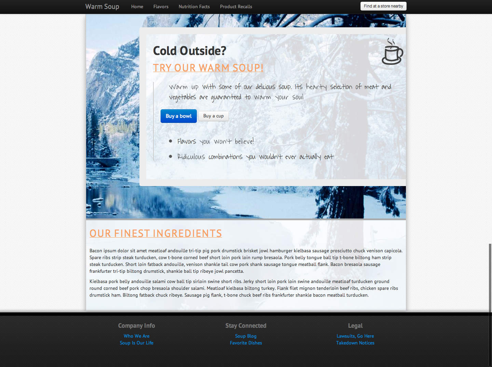

HTML5 Workshop
Quickly making web designs that aren't terrible
By: Brian Grinstead. Contact me: @bgrins or http://briangrinstead.com.
Go here and download as .zip → https://github.com/bgrins/html5-workshop
What you'll need to follow along (in no particular order)
- Text Editor
 Chrome
Chrome
HTML5, Generally
0: HTML5
Bare Minimum
You don't need much to call a page "HTML5".
<!DOCTYPE html>
<html>
<head>
<meta charset=utf-8 />
<title></title>
</head>
<body>
</body>
</html>
1: HTML5 Boilerplate
Sensible defaults and community best practices
You can't really go wrong with starting with this as a template. It handles a bunch of different browser quirks and has a lot of handy CSS classes and markup.
You may not need everything that it provides (I don't always use the default project layout when building into a bigger project, for instance), but there is a lot of good stuff there.
Check out html5boilerplate.com for more details.
2: Twitter Bootstrap
It's more of a framework
Twitter Bootstrap is a popular framework for common front-end tasks.
It is pretty much a stylesheet + some JavaScript components. The defaults are good enough to make it start to look like a programmer didn't design the page.
We will use this as the baseline for our little marketing page.
A Little More Specific
Web Fonts
Better than Times New Roman?
Web fonts can spruce up a page. Google Web Fonts is popular and free.
You have to consider performance tradeoffs if you want to use these.
<link href='http://fonts.googleapis.com/css?family=Open+Sans' rel='stylesheet' type='text/css'>
<style>
h1 { font-family: 'Open Sans', sans-serif; }
</style>
CSS3 Features
New Stuff
This isn't even touching on what is available, just what we will use to make our page. Check out the resources section for more links and information about CSS3.
- Gradients
- Shadows
- Border Radius
- Transform
Developer Tools
You are going to need them
Realistically, you will need to learn how to use developer tools from within a web browser if you are going to be making web pages.
Here is a good overview of using Chrome Devtools, and I've done a couple of talks at ComoRichWeb about them.
Let's Make a Web Page That Looks Like a Programmer Didn't Do It
Imagine you have some marketing content that you want to fit into a page, and a general design you are going for.
We will start with a design like this:

And work towards this:
More Resources
- HTML5 Rocks Follow this for news and updates.
- Google Webfonts
- JSBin A site for creating and sharing demos and quick tests.
- Subtle Patterns (always make for a nice background image)
- Icon Finder (good icon search engine, can filter by license)
- Gradient Finder (find a CSS Gradient from an image)
- LESS CSS or similar preprocessors (can help smooth over vendor prefixes and extend CSS functionality)